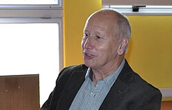

Luis Caffarelli | |
|---|---|
 Caffarelli in 2014[1] | |
| Born | Luis Ángel Caffarelli December 8, 1948 |
| Education | University of Buenos Aires (MS, PhD) |
| Spouse | Irene M. Gamba[2] |
| Awards | Bôcher Memorial Prize (1984) Pontifical Academy of Sciences (1994) Rolf Schock Prize (2005) Leroy P. Steele Prize (2009) Wolf Prize (2012) Shaw Prize (2018) Abel Prize (2023) |
| Scientific career | |
| Fields | Mathematics |
| Institutions | University of Texas at Austin Institute for Advanced Study University of Chicago CIMS University of Minnesota |
| Thesis | Sobre Conjugación y Sumabilidad de Series de Jacobi (On Conjugation and Summability of the Jacobi Series) (1971) |
| Calixto Calderón | |
Doctoral students | Guido De Philippis Ovidiu Savin Eduardo V. Teixeira |
Luis Ángel Caffarelli (Spanish pronunciation: [ˈlwis 'anxel kafaˈɾeli]; born December 8, 1948) is an Argentine-American[3] mathematician. He studies partial differential equations and their applications. Caffarelli is a professor of mathematics at the University of Texas at Austin, and the winner of the 2023 Abel Prize.[4]
Caffarelli was born and grew up in Buenos Aires. He obtained his Masters of Science (1968) and Ph.D. (1972) at the University of Buenos Aires. His Ph.D. advisor was Calixto Calderón.[5][6] He currently holds the Sid Richardson Chair at the University of Texas at Austin and is core faculty at the Oden Institute for Computational Engineering and Sciences.[7] He also has been a professor at the University of Minnesota, the University of Chicago, and the Courant Institute of Mathematical Sciences at New York University. From 1986 to 1996 he was a professor at the Institute for Advanced Study in Princeton.
Caffarelli published "The regularity of free boundaries in higher dimensions" in 1977 in Acta Mathematica.[8] One of his most cited results regards the Partial regularity of suitable weak solutions of the Navier–Stokes equations; it was obtained in 1982 in collaboration with Louis Nirenberg and Robert V. Kohn.[9]
In 1991, he was elected to the U.S. National Academy of Sciences. He was awarded honorary doctorates by the École Normale Supérieure, Paris, the University of Notre Dame, the Universidad Autónoma de Madrid, and the Universidad de La Plata, Argentina. He received the Bôcher Memorial Prize in 1984. He is listed as an ISI highly cited researcher.[10]
In 2003, Konex Foundation from Argentina granted him the Diamond Konex Award, one of the most prestigious awards in Argentina, as the most important Scientist of his country in the last decade. In 2005, he received the prestigious Rolf Schock Prize of the Royal Swedish Academy of Sciences "for his important contributions to the theory of nonlinear partial differential equations". He also received the Leroy P. Steele Prize for Lifetime Achievement in Mathematics in 2009.[11] In 2012, he was awarded the Wolf Prize in Mathematics (jointly with Michael Aschbacher) and became a fellow of the American Mathematical Society.[12] In 2017 he gave the Łojasiewicz Lecture (on "Some models of segregation") at the Jagiellonian University in Kraków.[13]
In 2018, he was named a SIAM Fellow[14] and he received the Shaw Prize in Mathematics.[15]
In 2023, he was awarded the Abel Prize "for his seminal contributions to regularity theory for nonlinear partial differential equations including free-boundary problems and the Monge–Ampère equation".[16][17][18]
Caffarelli has coauthored two books:
{kind=link}